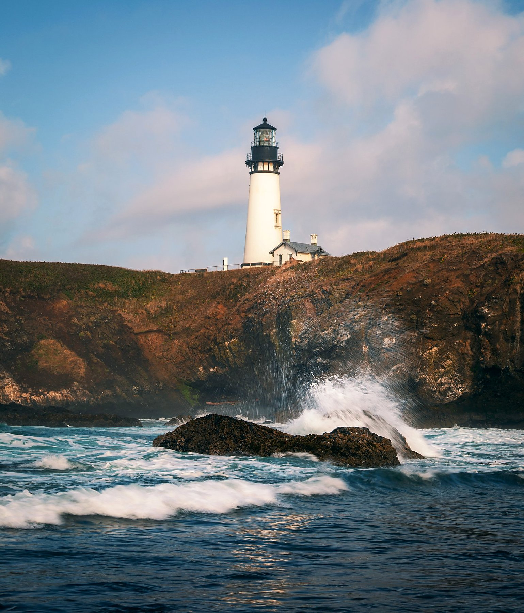
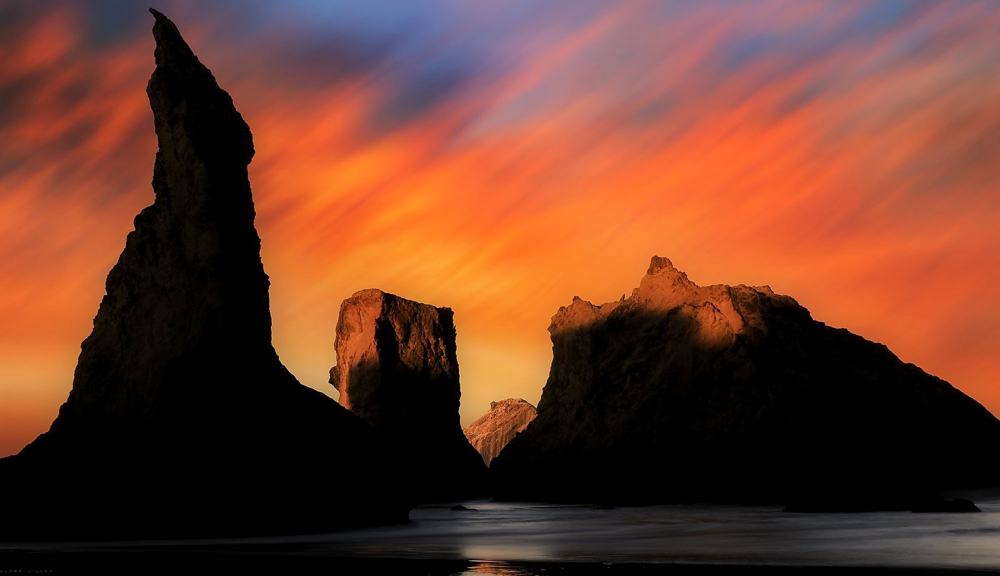
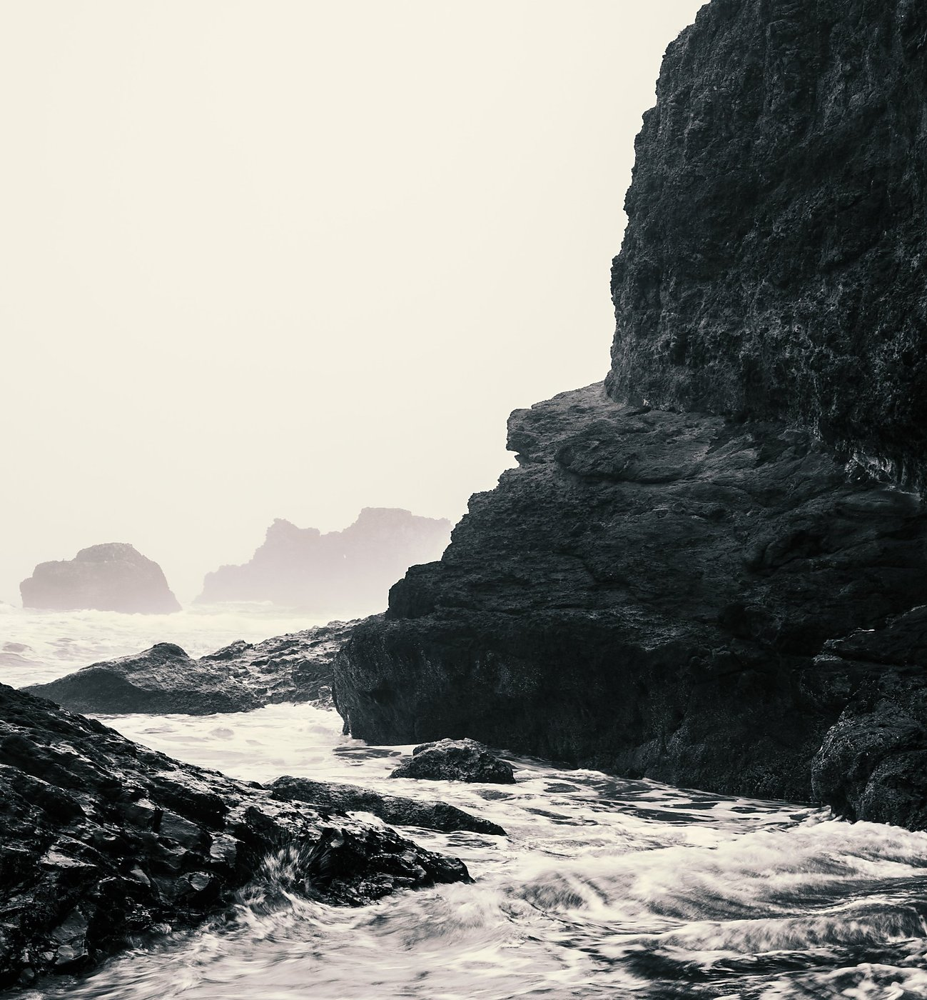

Museum-quality prints from the Pacific Northwest's most dramatic coastline — Cannon Beach, Bandon Beach, the Columbia River Gorge, and beyond. Canvas, metal, acrylic, and framed.
The Oregon Coast runs for 363 miles of state-protected shoreline — rocky headlands, sea stacks rising from fog, waterfalls dropping directly into the Pacific, and lighthouses perched above the surf. Dan has photographed this coastline extensively over multiple trips, returning in every season to chase the light that makes this stretch of Pacific Northwest coast unlike anywhere else on earth.
Whether it's the iconic Haystack Rock at Cannon Beach reflected in receding tide, the fiery sea stacks of Bandon Beach at sunrise, or the long-exposure silk of Bridal Veil Falls in the Columbia River Gorge, these prints bring the raw energy of the Pacific Northwest into your space.
"The Oregon Coast has this quality where you can drive an hour and find a completely different visual world. The rock formations at Bandon, the slot canyons of the Gorge waterfalls, the sea fog at Cannon Beach — each one deserves its own trip."
— Dan Sproul, Lima, Ohio
Locations photographed
Featured Oregon Coast Prints

Cannon Beach — Haystack Rock
Hero Shot · All Media Available

Bridal Veil Falls — Columbia River Gorge
Long Exposure · Canvas & Framed

Yaquina Head Lighthouse
Oregon Coast · Canvas & Metal

Bandon Beach — Sea Stacks at Sunrise
Panoramic · All Media

Oregon Coastal Landscape — Pacific Northwest
Seascape · Wide Format

Moody Oregon Coast — Monochrome
Black & White · Sea Stacks
These are a selection from Dan's Oregon Coast portfolio. Over 100 Oregon images available — all printable at large format.
View Full Oregon Collection ↗Premium cotton, gallery-wrapped. Ready to hang.
Archival paper in white, silver, or dark frames.
Dye-infused aluminum. Vivid, waterproof, modern.
Face-mounted crystal clarity. Gallery-grade depth.
Where exactly on the Oregon Coast were these photographs taken?
Dan has photographed extensively along the entire Oregon Coast — from Astoria in the north to Brookings near the California border. Key locations include Cannon Beach (Haystack Rock), Bandon Beach (sea stack formations at sunrise), the Columbia River Gorge (Bridal Veil Falls, Crown Point), Yaquina Head near Newport, and several remote coastal headlands accessible only on foot. He typically visits multiple times per year to shoot in different light and weather conditions.
What sizes are Oregon Coast prints available in?
All Oregon Coast images are available from 8×10 inches up to 40×60 inches on canvas and metal. The panoramic Bandon Beach and Cannon Beach images are particularly striking at large format — 36×24 and larger. Custom sizes are available for commercial and interior design projects.
Do Oregon Coast prints ship to my location?
Yes — prints ship to all 50 states and over 21 countries worldwide. Orders are fulfilled through Dan's print partner at dansproul.com with a full satisfaction guarantee.
Are Oregon prints available for commercial use in hotels or offices?
Absolutely. Dan works directly with interior designers, architects, and hospitality groups. He has completed commercial installations including Drury Inn hotels and the Wexner Medical Center at Ohio State University. Contact Dan for trade pricing and large-format quotes.
Every Oregon Coast image available as museum-quality canvas, metal, acrylic, and framed prints.
Ships worldwide · Satisfaction guaranteed · Custom sizing available